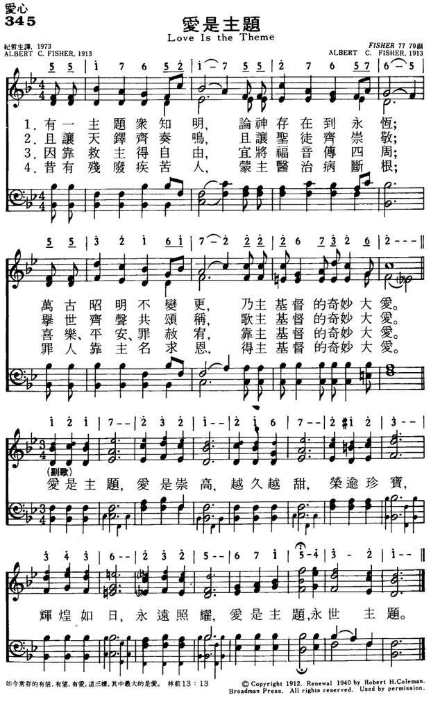

|
|
|
|
1 Of the themes that men have known, Chorus: 2 Let the bells of heaven ring, 3 Since the Lord my soul unbound, 4 As of old when blind and lame |
345爱是主题
1.有一主题从知明，论神存在到永�琚A
万古昭明不变更，乃主基督的奇妙大爱。 爱是主题，爱是崇高，越久越甜，荣逾珍宝， 辉煌如日，永远照耀，爱是主题，永世主题。 2.且让天军齐奏鸣，且让圣徒齐崇敬中， 举世齐声共颂称，歌主基督的奇妙大家。 爱是主题，爱是崇高，越久越甜，荣逾珍宝， 辉煌如日，永远照耀，爱是主题，永世主题。 3.因靠救主得自由，宜将福音传四周， 喜乐平安罪赦宥，靠主基督的奇妙大爱。 爱是主题，爱是崇高，越久越甜，荣逾珍宝， 辉煌如日，永远照耀，爱是主题，永世主题。 4.昔有残废疾苦人，蒙主医治病断根， 罪人靠主名求恩，得主基督的奇妙大爱。 爱是主题，爱是崇高，越久越甜，荣逾珍宝， 辉煌如日，永远照耀，爱是主题，永世主题。 |
|
https://www.mred365.cn/szxg/7348.html
 https://hymnary.org/hymn/VoP1947/page/115
|
|
|
|
|


Love is the Theme by Albert C. Fisher
LX1890
Love Is The Theme
345爱是主题
| Text: | Love Is the Theme |
| Author: | A. C. F. |
| Tune: | [Of the themes that men have known] |
| Composer: | Albert C. Fisher |
| Short Name: | Albert C. Fisher |
| Full Name: | Fisher, Albert C., 1886-1946 |
| Birth Year: | 1886 |
| Death Year: | 1946 |
Born: March 10, 1886, New
Berne, North Carolina.
Died: February 6, 1946, Dallas, Texas.
Buried: Mount Olivet Cemetery, Fort Worth, Texas.
Fisher attended Fort Worth University and Polytechnic College, Fort Worth, Texas; Vanderbilt University; Southern Methodist University; and earned his Doctor of Divinity degree at Asbury College, Kentucky. He moved to Fort Worth in 1908, and for a decade served as a general evangelist for the Methodist Episcopal Church, South. In World War I, he was a military chaplain. After the war, he worked in the East Oklahoma Conference and (beginning in 1944), the North Texas Conference. His works include:
Best Revival Songs (Nashville, Tennessee: The Cokesbury Press, 1924) (music editor)
© The Cyber Hymnal™ (www.hymntime.come/tch)